How to Use Anki: An Efficient Tutorial for Beginners
We’re going to cover ONLY the most essential elements of Anki that you should focus on, so you can:
- Immediately start using this awesome spaced repetition software
- Avoid the same mistakes that I did; and
- Have a roadmap that tells you what’s actually important when using Anki
Capabilities of Anki
If you don’t know already, here are a couple of things Anki allows you to do in a nutshell:
- Schedule reviews automatically, so you don’t have to worry about which specific topic to study
- Study 1714.29% more efficiently as compared to those using conventional flashcards
- Study only what needs studying
- Encode information into long term memory at will, rather than by chance
- Remember almost anything you want without having to re-read
- Study anywhere! Studying felt less effortful than ever the moment I started using Anki before. What a blessing.
Now, this guide exists because I believe you just need to learn the few core info if you’re just looking to start.
It’s much like learning how to drive a car:
You don’t start driving a car by studying the ENTIRE manual. You only need to get better at using the ESSENTIAL controls to be able to start driving it.
Real Talk: What is Anki? How does it work?
As you may know, Anki is an open-source flashcard app that uses spaced repetition algorithms to help you prevent natural forgetting.
Even if you’re not born with awesome recall skills, Anki can help you to intentionally commit information into long-term memory.
But there’s a caveat.
That is, Anki works by supplementing your study process.
As good as it is, it’s NOT a magic pill nor a substitute for poor learning skills.
Why? Because Anki covers just the final one-third of the memory’s core processes for information encoding. — which is retrieval.
This means that if the first two-thirds of the system you use for studying — encoding & storage — is messed up, then using Anki won’t be the magic pill that it’s believed to be.
In contrast, when you do use Anki with the right process, you could gain tremendous advantage over the competition:
- You basically guarantee that anything you study (again, using the right process) WILL get remembered for a long time.
- You build up a tall stack of prior knowledge that allows you to understand complex concepts quickly.
- You eliminate the most time-wasting study activity of all — “restudying what you’ve already studied because you forgot”
- You can turn downtime into productive study time (when you use Anki while eating, for example, it allows you to practice 50 items in a breeze)
Best of all, you get a tremendous long-term efficiency benefit:
Michael Nielsen mentioned that in 20 years, he is 1714.29% (120 minutes/7 minutes * 100%) more efficient for each card when learning using spaced repetition compared to conventional flashcard learning.
Sound good so far? I’m hearing questions…
“Isn’t Anki just good for memorizing small facts?”
Contrary to popular belief, just because Anki is a flashcard app doesn’t mean it’s only used for memorizing words or raw facts.
As I imply in the last section, Anki is also a tool for LEARNING — which means it helps you establish a “library of mental models” for understanding higher-level concepts.
I never skip Anki because in my mind, if I don’t retain all the prerequisite knowledge I’m required to remember, then it’d be hard for me to understand higher-level concepts in the future. (Ultimately, this causes even more wasted time.)
“If Anki is so effective, then why do so many people fail at using it?”
Why do SO MANY people go into flashcard hell?
Glad you asked. A few reasons why:
- They use shared decks (most of which are ineffective). They keep trying to remember what they haven’t even learned yet. Learn before you memorize!
- They have an unwieldy deck structure. Don’t create artificial knowledge barriers! As a rule of thumb, you should have one deck for each retrieval context. (exam, interview, language, field, etc.) NOT a deck for every section or topic of a book!
- Intermittent Reviews. They do Anki reviews intermittently—as if natural forgetting can be “skipped.”
- Their thinking is stuck in Anki and ignore the other 2/3 of the learning process. They functionally fix themselves into Anki — they see it as “the entire system” when really, it’s really just “a small part of the engine”. Learning skills matter.
Note: I’m well aware that you can use shared decks effectively for standardized exams, but I really don’t recommend it — UNLESS you’re in Medical School. I know of people who’ve created and used high-quality shared decks with great success, and you can find them here.
Thing is, most of these people who fail at using Anki treat is as a magic pill, instead of a tool that requires skill. (Woah, that rhymed…)
As Michael Nielsen put it in his essay:
Anki is an extremely simple program […] Despite that simplicity, it’s an incredibly powerful tool. And, like many tools, it requires skill to use well. It’s worth thinking of Anki as a skill that can be developed to virtuoso levels, and attempting to continue to level up toward such virtuosity.
Creating your first Anki cards
To create cards, just hit the “Add” on the top part of your window.
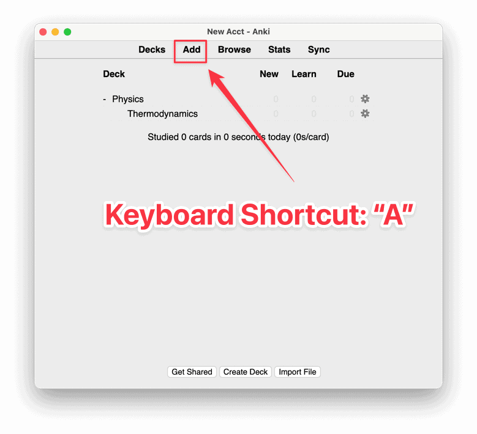
By clicking on it, you should be seeing the Add New window containing (1) Type, (2) Deck, (3) Front and Back fields, and (4) Tag field.
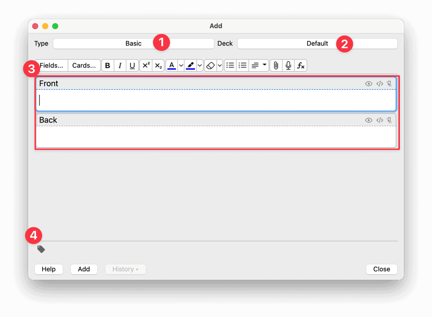
Now, I wouldn’t worry about the “Fields…” and “Cards…” buttons just yet. They’re just card customizations that don’t make any difference at all to your recall.
Like I said at the beginning of this guide, this is supposed to be about the essentials — and they’re just ain’t it.
So don’t even think that you need them.
Trust me, you’ll get VERY FAR without even touching those things.
Now, in the “Add New” window, the question goes in “Front” and the answer goes in “Back” field, just like your good ol’ paper flashcards.
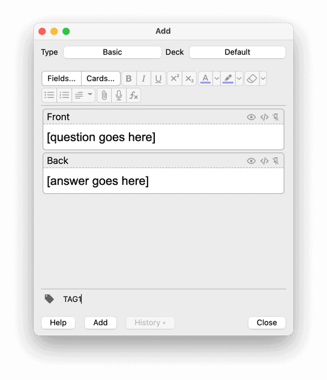
Once you’ve entered your desired Question and Answer pair, you can click on “Add” or just use the shortcut “Ctrl + Enter” or “Cmd + Enter” to make the card.

Note: Make sure to DOUBLE CHECK the “Deck” field before adding the card to prevent future headaches.
By the way, the card you’ve just seen is one of the “Basic” Card Types.
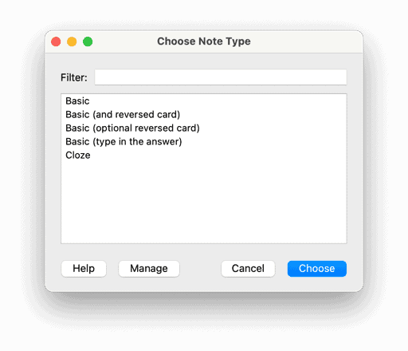
Yes, there are a few card types — but remember that the principle here is still to help yourself review information through recall.
The “Basic” card type allows you to perform the traditional flashcard studying — Question in front, Answer at the back.
The Cloze deletion, on the other hand, is a “fill-in-the-blank” type of card.
The others are self-explanatory based on their name.
Question, foreseen: Which Anki card types are the best for learning?
YES. The answer is yes…but I’ll explain.
The best card type is the one that has the best fit for the information you have learned.
And guess what? The most flexible way to do that (without sacrificing the quality of learning) is by making Q&A cards with a Basic card type.
I’m speaking from experience, too: Cloze and reversed cards are hard to pull off unless you know how to create quality cards.
So my advice to you is to practice creating questions and answers first using a Basic card type. Only create Cloze cards for things that cannot be answered through recognition memory.
In short, start with only using Basic cards. Worry about the others once you can already make that work for you.
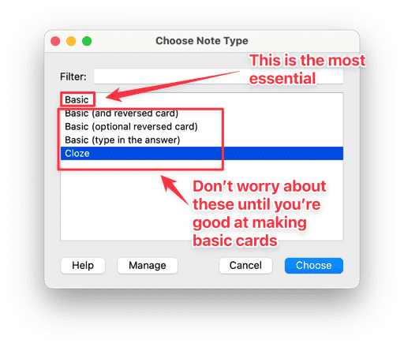
Organizing your cards
Like I said earlier, I like to use Tags instead of subdecks.
Why tags? Because it simplifies everything. You need not worry about creating subdecks for each subject because you can use “Custom Study” more selectively later on.
You can add Tags to your cards in two ways:
- During Card Creation, or
- Using the Card Browser
I recommend adding Tags during Card Creation — it’s much faster and more proactive.
To add Tags during card creation, you just enter the name of your desired Tag on the “Tags” field of the Add New window.

Here’s something to remember: Replace spaces with underscores.
Note: If you missed that and accidentally entered two words separated by spaces, you’ll be creating TWO tags for your cards, not one.
Now, creating that card, you should notice that the Tag name you entered in the Tags field did not go away.
This means you can create and create several cards without having to worry about putting Tags in every single time—that’s pretty handy.
The second method of adding tags is via the Card Browser. You open it up by clicking on “Browse” on the Home Screen or pressing “B” in the same place.
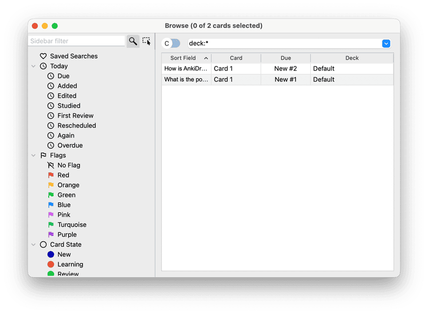
Here’s how:
- Click on a deck where you can find the to-be-tagged cards
- Select your cards on the right-hand side (you can select multiple)
- Right-click, then go to Notes > Add Tags
 )
)
I don’t prefer this method because it’s rather easy to mess this up.
Imagine accidentally adding tags to other cards when you already have a large collection of cards — just thinking about organizing it is already a disaster.
But, you do what you wanna do 🙂
Here’s How I Make Anki Flashcards
When you’re creating your cards, IMO the best way to create high-quality cards is to have these elements in place:
- A specific question
- A specific answer
- Screenshot of source
- Tags (optional)
You should be good as long as you have those.
To demonstrate, I’ll be using a random book from the medical field (a field I don’t know anything about) just to demonstrate this process from a beginner standpoint.
So, when I see something on my book like this:

This card below is the one I make. I included the Question, Answer, Screenshot, and Tag.

PRO TIP: You can add new lines to the “Back” field if you want to add more details such as mnemonics or screenshots.
Notice that I italicized and bolded the word “previously” to show emphasis. It’s a way to make a cue for an answer more salient and easier to process.
Let’s look at the card preview.
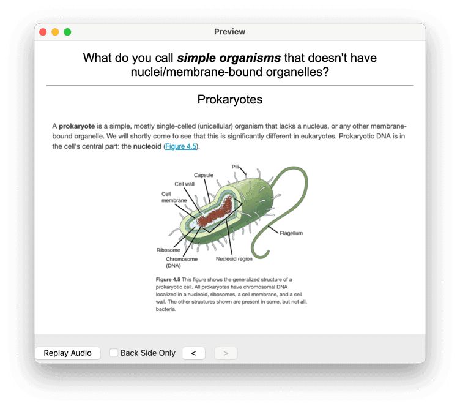
Looks awesome!
By the way, I want to tell you that for dense conceptual subjects, I break each concept down into more questions that test my understanding.
And this requires that I understand the thing FIRST.
This is the iron rule of effective card-making…
Learn first before you memorize! (Rules #1 and #2 in the classic Twenty Rules of Formulating Knowledge)
Facts are good to include as cards, for sure. But you have to encourage your understanding of the material — otherwise you’ll end up doing rote memorization. You’ll end up with a LOT of knowledge that you cannot even use.
A pro tip from me:
You can also simulate situations that use the concept itself so you don’t miss out on actually applying what you have learned.
See this card, for example:
 )
)
See how that works?
Alright, let’s move on to what you need to remember when creating new cards.
Tips for Creating Good Anki Flashcards
1 – Learn FIRST, and THEN create flashcards from what you’ve learned
Just like what I said a while ago, you gotta learn first before you make your cards.
If you’re just starting out, all you need to know is that the purpose of these flashcards is to test what you already learned.
Folks, it’s “remember what you learn“, and not “learn what you remember“.
It’s easy to get confident that you can remember anything using Anki, but the truth is that NONE of that matters if you do not understand the material you’re putting in.
(Unless you’re really memorizing isolated facts, but even so, context matters for retention)
Well, what’s the worst that could happen when you don’t follow this rule?
You’ll know how to answer the flashcard but you’ll find out that you cannot apply the “knowledge” anywhere else.
In other words, you just get pseudoknowledge.
2 – One simple card is worth 2x the vague cards
Don’t try to put in paragraphs in a card.
Don’t even try to put “Explain” type of questions.
Break them down until it’s simple FOR YOU.
This brings me to my next point.
3 – The number of cards don’t matter much; coverage matters more
There’s no optimal number of cards.
Think about what’s important here: It’s important that you have made cards that can cover the entire material you’ve understood.
So when adding cards, it doesn’t matter if you have plenty of cards just by studying a chapter as long as you follow the two rules above.
What matters is you actually learn the concepts thoroughly.
Break a concept as much as possible.
By doing these two things, you’ll feel like you’re able to recall each card in less than a second. (Well, not physically less than a second, but that’s how it’ll feel like 😉)
It’s much, much faster compared to creating a few but long, complicated cards.
For example, instead of:
“What are Newton’s Three Laws of Motion?”
You write questions like:
- “What is Newton’s First Law of Motion?”
- “What is Newton’s Third Law of Motion?”
- “Which law states F=ma?” (obviously, this question covers one law in another angle — also called redundancy)
This reduces ambiguity — making your cards faster to answer. Compare that to doing a mini-brain dump for each card and you’ll realize it gets tiresome pretty quickly.
Just to be clear, there’s no stopping you from creating both types of cards.
Feel free to experiment, because there really are times when a longer card can be more efficient. Let’s avoid black-and-white thinking here.
Still not sure how to properly structure your flashcards?
Well, in that case, I made a quick reference of examples just for you.
This quick reference will show you 13 flashcard examples and anti-examples so you can get started making good flashcards and avoid creating bad ones.
Specifically, you’re going to discover some of the most important lessons I’ve gained from manually creating 4000+ flashcards:
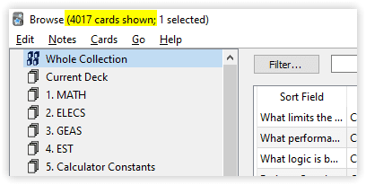
You can click the red button below to go to the signup page.
How to use Anki for studying anywhere (without feeling like you’re studying)
Head over to Anki Sign Up and register for an account. It’s totally free. That’s why Damien Elmes is a hero.
Then, after creating an account, press ‘Sync’ on your Anki’s home screen.
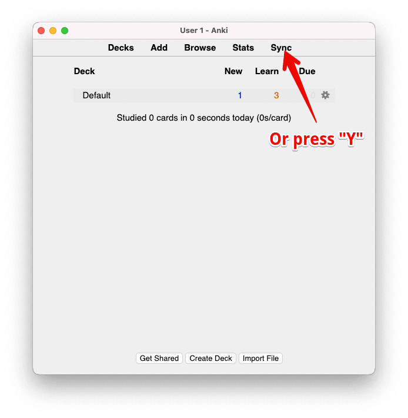
A dialog box requiring your details will pop up.
Simply enter the details you signed up for at AnkiWeb, and this will allow automatic syncing of your deck to the AnkiWeb servers—which allows you to sync your cards to ALL devices.
It’s pretty neat, especially if you’re going outside with your smartphone. (or when you’re sitting on the toilet — not exactly neat, tho)
When you’re waiting in line, or just doing nothing at all, instead of scrolling through Facebook, you can answer 5 to 20 cards in a minute, depending on how good you create cards.
That means you’re converting idle time into STUDYING.
If that isn’t called studying smart, I don’t know what is.
You can turn it off and manually sync your cards by pressing Y on the home screen, but it’s always a good idea to sync your cards automatically upon open/exit just to avoid forgetting.
Smash That Spacebar!
Studying using Anki is pretty straightforward.
You just open the app, click a deck with due cards, and you’re set.
When a card shows up, you just press on the spacebar to show the answer.
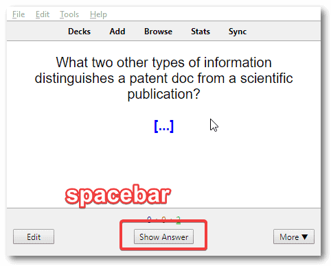
When the answer shows up, you are given choices below to choose from: Again, Good, Easy.
Using Anki default settings, Anki will show the card again after a certain amount depending on how difficult it was for you to recall the card.
- Again – Less than a minute, the card will show up again
- Good – The card will show up in less than 10 minutes
- Easy – The card will show up after 4 days
My method is simple:
- You press Again when you failed to recall the answer,
- You press Good when you successfully recall the answer
- You press Easy when you meet two things: you already know the answer a long time ago, and you have recalled the answer in an instant
You can use Answer Button shortcuts as shown below:
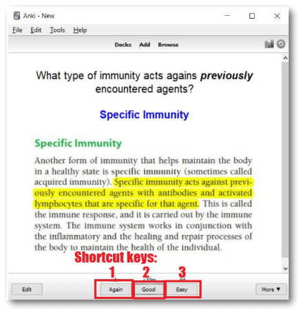
As a side note for default settings, pressing “Again” on a mature card for a total of 8 times makes your card “disappear” and not show up for review.
This is called a ==Leech card==, and is usually classified as a poorly created card.
When you get Leech cards, all you have to do is reformulate your questions. Again, refer back to how I told you to create flashcards.
Alright, now before I end this, I would like to give you some tips that would help you study smarter using Anki.
Why You Should NEVER Miss a Day of Review
Forgetting happens every single day. This means that poorly learned, seldomly used information are good as DELETED every single day.
Anki works to combat this effect. (But again, follow my tip#1 when creating cards)
Another reason not to skip is you end up with a mountain of cards the next day. Yup, now you’ll have to review your overdue cards PLUS your due cards — that’s a hell of a review session to go through (trust me, I’ve been through 1500 cards in a day and I almost cried just doing that).
So, try do study every single day without fail.
Closing Thoughts: Anki is a great tool for studying — but it’s not the entire study system
As powerful as Anki is, it’s just a tool that depends on your skills — and I want to make sure I drive that point home.
There’s always a sense of “wonder” in exploring new tools especially when it promises to solve our problems with having the lack of time.
But my advice, from experience, is to look at efficiency a different way:
Instead of adding tools, think about eliminating wastes.
That’s the purpose of tools in the first place — to help us eliminate effort that isn’t adding any value or not leading us closer to our goal.
Anki eliminates the non-value-adding activity called “scheduling your reviews and worrying about whether you need to review each item today or not.” (Yeah, that’s a mouthful)
But do NOT, by any means, expect that it’s a magic pill that will make you remember anything without skill and work ethic.
What’s Next?
- Download AnkiCollab addon 🌐 AnkiCollab
- Sign up account on AnkiCollab and subscriber to your deck:
Setup Subscriber to Your Personalized Deck